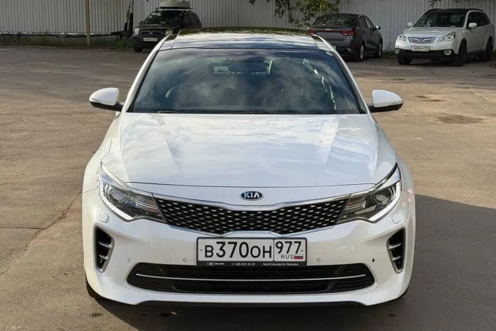

ОБЪЯВЛЕНИЕ АГЕНТСТВА
Kia Optima GT
Kia Optima GT — 2016 год, 103 300 км. Цена и наличие требуют подтверждения.



1 900 000 ₽
Цена из объявления на 13.10.2026. Учтено снижение цены от 13 октября в ответе к исходному объявлению.
- Кузов
- Седан
- Год
- 2016 год
- Пробег
- 103 300 км
- Двигатель
- 2,0 л · автомат · 245 л.с.
- Статус
- Наличие уточняйте
В исходной публикации указаны один владелец и сервисная книжка. Состояние и историю необходимо проверить перед покупкой.
Данные и фотографии из публикаций агентства. Дата публикации: 26.08.2026. Старые объявления не подтверждают наличие сегодня.
Позвонить Дмитрию ↗Канал агентства ↗Открыть интерактивную карточку ↗